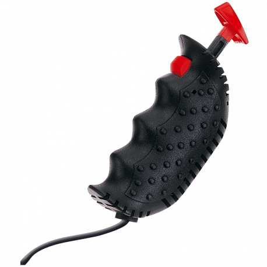
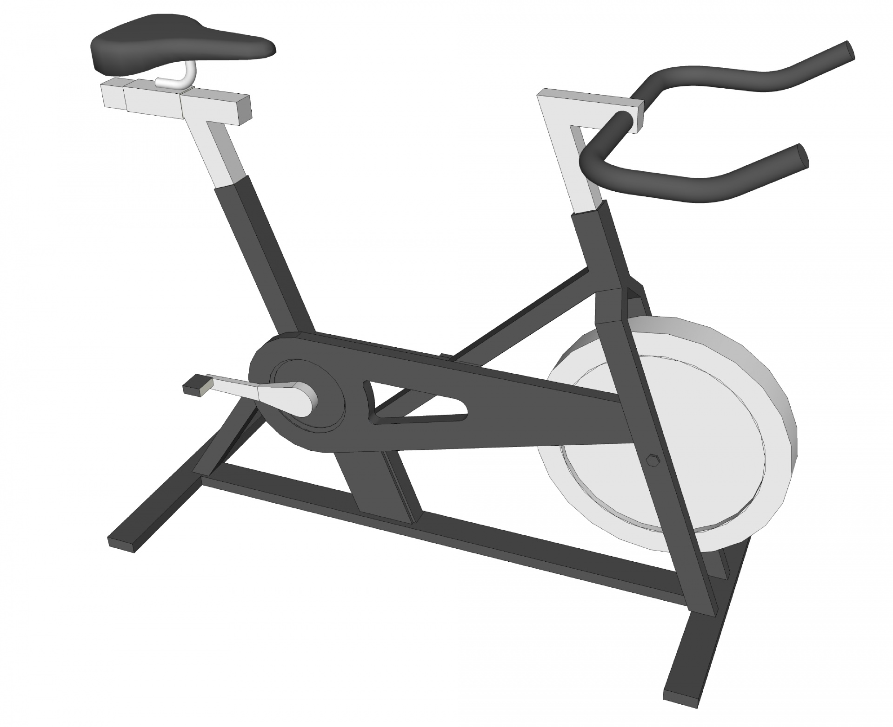
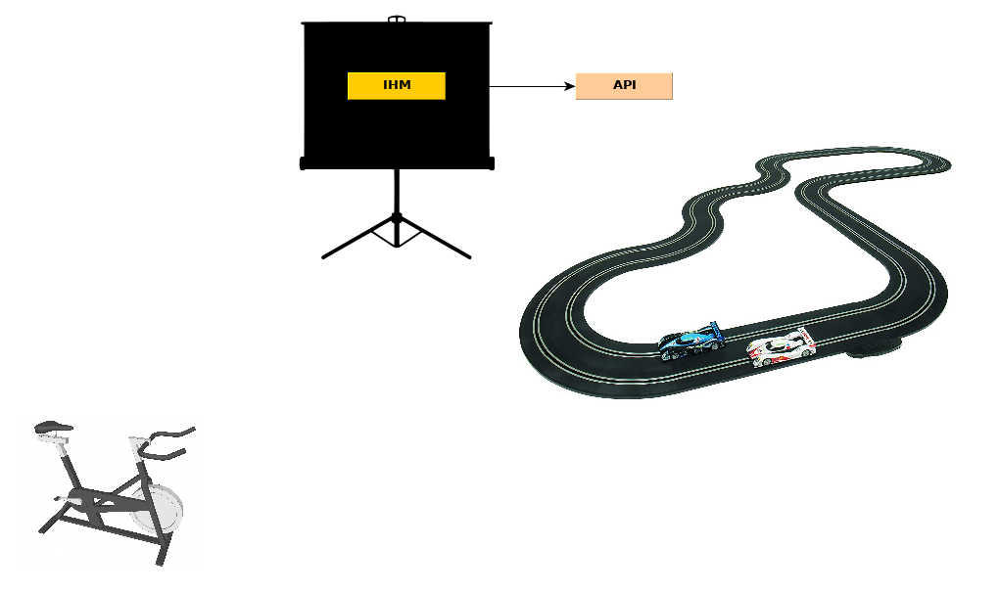
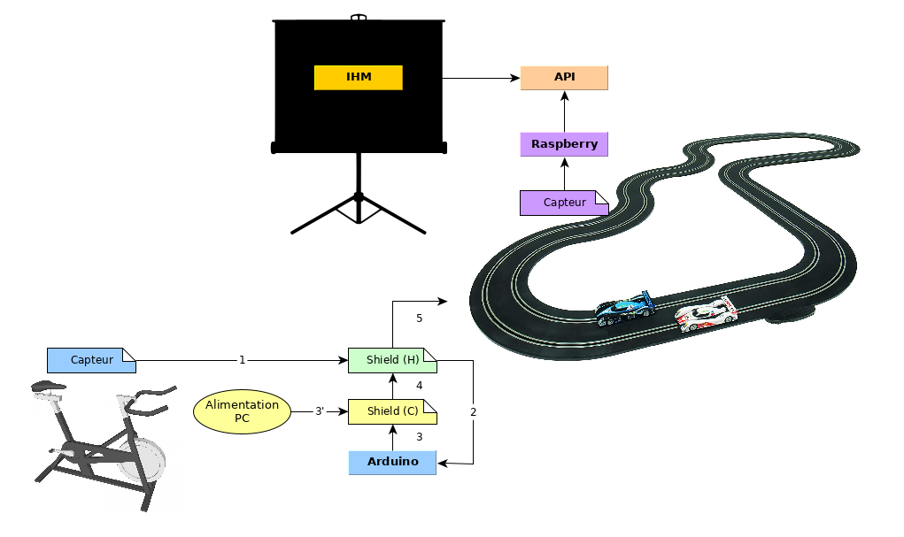
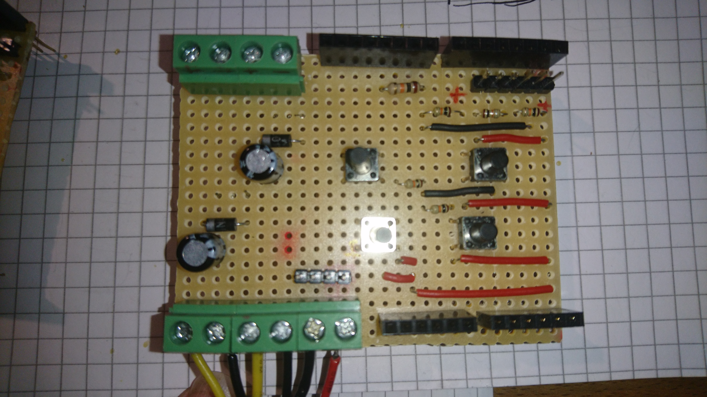
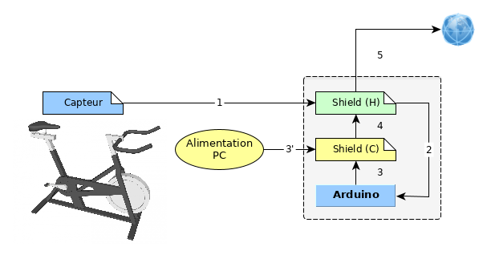

Comment j’ai fini par déployer à 2h du matin une application sur AWS pour piloter des voitures électriques avec un vélo d’appartement.
(In progress)
Il était une fois…
Le principe





Réalisations, écueils, et dénouements !
Le banc de test !
Pas d’intégration possible
Tout doit être ajustable !!!
Les composants logiciels








Le jour J
alias MEP
Le fil rouge …
Montage

Paramétrage
Le début de la fin…
Bilan
Une ligne de puissance KO !